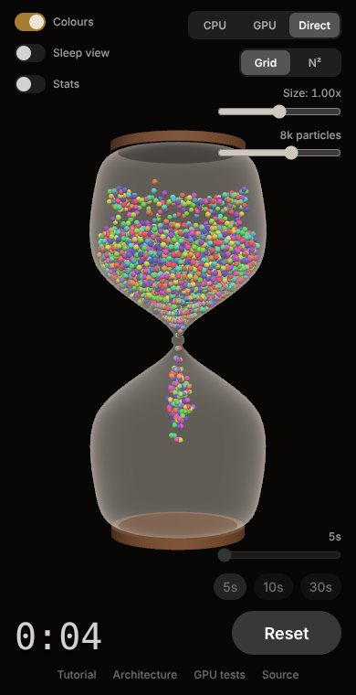

Shifting Sands · Web
Architecture of the WebGPU hourglass


The page has two halves that share one GPU device. three.js owns the picture: scene graph, camera, lights, materials. A small engine written against the raw WebGPU API owns the physics. They meet at a single buffer of particles.
Modules
graph TD main["main.js
device, wiring, frame loop"] subgraph UI controls["ui/controls.js"] end subgraph Services store["settingsStore.js"] timer["timerModel.js"] args["launchArgs.js"] end subgraph Scene scene["scene/hourglassScene.js
three.js WebGPURenderer"] end subgraph Physics cpu["cpuSimulation.js"] gpu["gpuPhysics.js
raw WebGPU"] wgsl["shaders.js
WGSL text"] end subgraph Models["Models (pure, unit-tested)"] profile["hourglassProfile.js"] packing["packing.js"] config["physicsConfig.js"] grid["grid.js"] end main --> controls main --> store main --> timer main --> args main --> scene controls --> store controls --> timer scene --> cpu scene --> gpu gpu --> wgsl scene --> profile scene --> packing cpu --> profile cpu --> packing gpu --> grid wgsl --> grid cpu --> config gpu --> config
| Swift file | Web module | What changed |
|---|---|---|
SandGeometry.swift | models/hourglassProfile.js | The profile is a value returned by createProfile(), not static state. |
GranularSimulation.swift | physics/cpuSimulation.js, models/packing.js | State is one Float32Array in the shared layout. |
ParticlePhysics.metal | physics/shaders.js | WGSL. Two neighbour-search flavours. No mesh expansion kernel. |
MetalPhysicsEngine.swift | physics/gpuPhysics.js | Asynchronous. One submit per frame. Hash grid buffers added. |
HourglassScene.swift | scene/hourglassScene.js | Instanced drawing replaces per-particle nodes and expanded meshes. |
HourglassSceneView.swift (Coordinator) | main.js | One thread, so no lock. |
TimerViewModel.swift | services/timerModel.js, services/settingsStore.js | Split into timing and persistence. |
ContentView.swift | index.html, ui/controls.js, services/launchArgs.js | Launch arguments become URL parameters. |
One particle, three homes
A particle is eight floats. The CPU simulation's array, the WGSL struct and the instanced vertex buffer all use this layout, so the same 32 bytes can be moved between them without being reinterpreted.
| Where | How it is declared |
|---|---|
| JavaScript | Float32Array, STRIDE = 8 |
| WGSL | struct Particle { posRadius: vec4f, velSleep: vec4f } |
| Vertex shader | Instance attributes instancePosRadius (offset 0) and instanceVelSleep (offset 4) on one interleaved buffer |
Three ways to fill the vertex buffer
All three modes end in the same draw call: one icosphere, drawn once per particle. They differ only in how the per-instance buffer gets its contents.
graph TD
subgraph CPUMODE["CPU mode"]
c1["CpuSimulation.step
JavaScript"] --> c2["Float32Array"]
c2 -->|"upload"| c3["Vertex buffer"]
end
subgraph GPUMODE["GPU mode"]
g1["Compute pass"] --> g2["Particle buffer"]
g2 -->|"copy + mapAsync
one frame late"| g3["Float32Array"]
g3 -->|"upload"| g4["Vertex buffer"]
end
subgraph DIRECT["Direct mode"]
d1["Compute pass"] --> d2["Particle buffer"]
d2 -->|"copyBufferToBuffer
on the GPU"| d3["Vertex buffer"]
end
c3 --> draw["Instanced draw"]
g4 --> draw
d3 --> draw
One frame in Direct mode
sequenceDiagram
participant JS as main.js
participant E as GpuPhysics
participant Q as GPU queue
participant T as three.js
JS->>E: step(dt, vertexBuffer)
E->>Q: writeBuffer(uniforms)
Note over E: one command encoder
loop each substep
E->>E: clearBuffer(bucket counts)
E->>E: pass: buildGrid
E->>E: pass: physicsStep, A to B
E->>E: swap A and B
end
E->>E: copyBufferToBuffer(particles to vertex buffer)
E->>Q: submit
JS->>T: render(scene, camera)
T->>Q: submit draw
Note over Q: runs in submission order,
so the draw sees the copy
Inside the physics kernel
graph TD
start["Read my particle from the snapshot"] --> deep{"Deep sleep?
counter over 30"}
deep -->|"yes, not my turn"| frozen["Write unchanged"]
deep -->|"yes, my turn"| support{"Still supported?"}
support -->|"yes"| frozen
support -->|"no"| awake
deep -->|"no"| light{"Light sleep?
counter over 15"}
light -->|"yes"| hit{"Awake neighbour
hitting me?"}
hit -->|"no"| frozen
hit -->|"yes"| awake
light -->|"no"| awake["Gravity, move"]
awake --> wall["Glass wall, floor, ceiling"]
wall --> spheres["Neighbours: push apart
lower chamber also exchanges velocity"]
spheres --> damp["Neck friction, damping"]
damp --> counter["Update sleep counter"]
counter --> write["Write my particle"]
The spatial hash
| Step | What happens |
|---|---|
| Clear | encoder.clearBuffer zeroes one list head per bucket. |
| Build | One thread per particle: hash its cell, atomicExchange itself onto the front of that bucket's linked list. |
| Lookup | For each of the 27 cells around me: hash it, skip a bucket already walked, follow the list to its end. |
Table size is the next power of two above twice the particle count, so memory follows the count and not the volume of the glass.
Timer
stateDiagram-v2
[*] --> idle
idle --> flipping: Start
flipping --> running: flip lands (1.2 s)
running --> complete: elapsed reaches duration
complete --> flipping: Start
flipping --> idle: Reset (respawn)
running --> idle: Reset (respawn)
Scene graph
graph TD root["Scene"] --> container["Group: container
rotates during the flip"] root --> camera["PerspectiveCamera, FOV 40"] root --> lights["4 directional, 1 point, 1 hemisphere"] container --> glass["Glass: surface of revolution
TSL Fresnel opacity, no depth write"] container --> caps["2 wooden caps"] container --> sand["Sand: icosphere x N instances
positionNode = local * radius + position"]